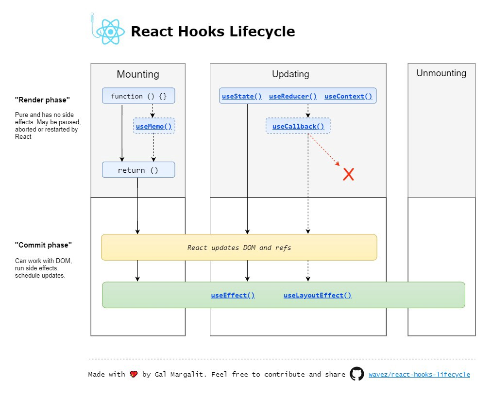

Intro to React
React Overview
- Intro to React
- Components
- Data Flow
- React Environment
- Directory Structure
- JSX
- Props
- State
- Forms
- Component Lifecycle
- Styling
Welcome!
Please take a moment to reflect on the incredible amount of work you have accomplished over the past year!
Community Agreements
How can we mindfully build a culture of support and community together?
Codecademy
Please complete all free lessons found here

React In-Class Template
We will also be building an in-class template alongside lectures.
Click here for the designs.
Overview of this course
- Understand how JavaScript frameworks operate
- Build cool web applications
- Learn the fundamentals of React
- Gain even more confidence
- Focus on learning how to teach yourself
What does JavaScript do?
- Manages Data and Data Flow
- Fetches data
- Processes and calculates data
- Controls the UI
- Uses the DOM API to interact with HTML
- Make the UI interactive by responding to user events.
What is a JavaScript framework?
- A JavaScript framework is a collection of JavaScript code libraries that provide a web developer with pre-written code for routine programming tasks.
- Framework vs. Library
- A framework is a full toolset that helps shape and organize your website or application.
- A library is a collection of pre-written code snippets that are less about shaping your application and more about providing a use-as-needed library of features.
Why can't I use jQuery?
jQuery does not manage data.
It also requires the DOM to constantly change.
Why can't I use jQuery?
A framework, like React, handles all of these events in an organized way. You can manage your data and the UI efficiently.
What is React.js?
- React is a JavaScript framework for building interactive UIs.
- It was created by Facebook.
- It is used by Netflix, Airbnb, Instagram, and many, many others.
- It is one of the most popular frameworks in tech.
Why React?

React is fast. Apps made in React can handle complex updates and still feel quick and responsive.
React is modular. Instead of writing large, dense files of code, you can write many smaller, reusable files. React’s modularity can be a beautiful solution to JavaScript’s maintainability problems.
Why React?
React is scalable. Large programs that display a lot of changing data are where React performs best.
React is flexible. You can use React for interesting projects that have nothing to do with making a web app. People are still figuring out React’s potential. There’s room to explore.
Core Concepts in React
(they are the same as JavaScript!)
- Managing Data (Data Flow)
- Controling/Creating the UI (Components)
React Overview
- Intro to React
- Components
- Data Flow
- React Environment
- Directory Structure
- JSX
- Props
- State
- Forms
- Component Lifecycle
- Styling
Components
React is built on a component-driven architecture, which is critical for building large and performant web applications.
Components are reusable parts of a web application that can easily display unique data either to or from the user.
- A self-contained and reusable bit of code
- One piece of a UI
Components

Each of the different colors represents a different component.
Websites built with React
Check out these beautiful websites.
Identify components that you can see!
Component Based Architecture

Product Menu contains Search Product, which has two child components:
- Search Product Field
- Product Price Listing, which contains:
- Product Category
- Product Price
BUT YOU TOLD ME
to separate my concerns (HTML,CSS,JS)!!!

Now separation of concerns is divided by components and not technologies :)
Big Takeaway
With the HTML, CSS, and JavaScript for each component in one place, we are making it:
- reusable
- easy to debug!
Big Takeaway
Each component --
with its HTML, CSS, and JavaScript in one place --
is reusable and easy to debug.
Each card has the same layout, stylings, and functionality.
All that changes is the data!
React Overview
- Intro to React
- Components
- Data Flow
- React Environment
- Directory Structure
- JSX
- Props
- State
- Forms
- Component Lifecycle
- Styling
Data Flow
React is great for web applications that display dynamic data.
Dynamic data is data that changes based upon user input or is tied to a user's account.
Dynamic Data in Designs
Front end engineers often get a list of API calls from backend engineers, endpoints that exist in an application.
- Then the front end engineer must:
- make an API call to retrieve the data
- figure out how the requested data should flow to the remaining components
Data Flow
In React, data flows one-way, from a parent to child.
Data from an API call is best passed into the parent component to flow to its children, then to grandchildren.

Designs Inform Data Flow Diagrams
Because of parent-child data flow considerations, we must think about constructing the data flow diagram carefully.
Inspect the designs to extract the data flow for Features. Assume Comments is for a particular Feature Article.


Data Flow Diagram
Based on the designs and discussion about data flow on the previous slide, consider creating a data flow diagram.
A data flow diagram is about tracking how the data is flowing.

Engineering Analysis
Let's visit one of the following sites to hypothesize about component structure.
Then consider its possible data flow diagram.
Data Flow Diagram Exercise
Create a data flow diagram for the website design below.
Consider which parts of the design are likely dynamic.
React Overview
- Intro to React
- Components
- Data Flow
- React Environment
- Directory Structure
- JSX
- Props
- State
- Forms
- Component Lifecycle
- Styling
Quick Pause!
We need to level up our developer toolkit
- Let's add the tools and code we need to run React projects
- Let's take a look at the documentation that we can reference when working in React.
Make sure you have these installed
In the terminal, check your versions for:
- Homebrew
- Node
- NPM
Check out this documentation.
A note on using CodeSandbox.io
Sign up for a free CodeSandbox account.
Then start a project using their React template.
Understanding NPM and Modules
NPM means Node Package Manager.
- A tool for downloading packages (pre-built code) for your JavaScript projects
- Can use to install front-end code, add frameworks, and run a server for your project!
Why use NPM?
So much code, so little time! You can add other tools and projects (a calendar widget or CSS framework) without having to write all the code yourself.
No longer need script tags!
Using NPM
Use NPM to find a project online or collaborate.
- Clone the project that you want to work on with git (or Sourcetree) and make sure it has a package.json file.
- Then navigate to directory that has the source code.
- Then in Terminal, type: npm install. This will load your dependencies.
- Then run the command: npm start. This will only work if the program you downloaded has a start script.
What is a package.json?
A table of contents for your code!
- Information on the author and a description of the project.
- Lists all packages that the project needs in order to run.
- Has build commands to get your project up and running.
Semantic Versioning
There is a structure to how developers keep track of the iterations of a package or dependency
Example: 1.8.3
- 1 is the "major version" and if this is updated, it will break currently functionality
- 8 is the "minor version" and usually indicates a new feature has been added but functionality is not changed.
- 3 is a patch or small fix.
Create React App
Facebook created a handy tool to jumpstart your React App.
This video shows how to spin up a new React.js app on your local machine in seconds!
Create-React-App
The name of this project will be handle-first-react-app
If this were my project, the commands would be:
cd documents/dev
npx create-react-app cmh-first-react-app
cd cmh-first-react-app
npm start
Now, open your finder and take a look at the folders inside of your new project!
For a quick start guide, look to Notion.
React Documentation
- React docs are clean and easy to read.
- Please bookmark this link.
- Explore docs for 10 minutes. Notice its organization.
- What did you notice?
- What did you like or dislike?
React Overview
- Intro to React
- Components
- Data Flow
- React Environment
- Directory Structure
- JSX
- Props
- State
- Forms
- Component Lifecycle
- Styling
Folder Structure
Let's take a tour in VS Code!

Designs Inform Architecture
Your React src folder should have these folders:

- Assets - logo, images, icons
- Components - all global components (like buttons, cards).
- Data - static information
- Pages - a folder for each page of design, with all of the needed components inside
Pages Folder Architecture
Within the src folder in Pages, each folder contains at least:

- one JS file named after the page contents (e.g., Admin folder has an Admin.js file)
- possibly another folder of files, pending the dynamic data to display to the user.
Example: Graphs, Tables, etc. folders with own files/folders.
Project Architecture Practice
Inspect the designs to identify components and the possible folder structure.
Diving into Code!
Let's build a component and discuss how to make it appear (render) and how to add content (JSX).
A Simple Component
import React, { Component } from 'react';
const HelloMessage = () => {
return (
Hello World!
);
}
export default HelloMessage;
Understanding a Component
import: React components must import the React code to create a component with all of the React features.return: The function will always have a return statement.- The return statement will always be the code that is displayed in the UI.
export: An export statement allows a component to be used by other components.
Understanding a Component
For now, this component does not have any dynamic data.
We will use JSX to creating the UI first, and then add data.
React Overview
- Intro to React
- Components
- Data Flow
- React Environment
- Directory Structure
- JSX
- Props
- State
- Forms
- Component Lifecycle
- Styling
JSX
- A short-hand language that lets you create JavaScript objects using an HTML-like syntax.
- Generates JavaScript objects by matching HTML element names to components.
JSX

JSX
- Read through this document
- Check out the CodePen
- Add a user2 and an element2
- Try to get the second user to render on the page!
Udemy Video: Understanding JSX
Watch this short video.
Exercise: Intro to JSX Elements
Complete the four tasks listed in this CodeSandbox.
Create a React component
- Go to this CodeSandbox.
- Make a
UserProfilecomponent with:- An avatar
- Your first and last name
- Your favorite color
Avatar photo: https://randomuser.me/api/portraits/thumb/lego/8.jpg
Getting a component onto the page
ReactDOM.render
A library method that we will use to place components onto our webpage
// The ReactDOM library provides an object 'ReactDOM' with a function 'render'
// It needs the component and the target in the DOM
ReactDOM.render(<MyReactComponent />, document.getElementByID('app'));
//This is generally all the HTML you will have!
More on the render method
- It takes in 2 arguments, what you want to render, and where it should be rendered to
- Typically, you will render one component, the
Appcomponent - There will be one div in your HTML file with an ID
- Pass in this ID to
document.getElementByID() - Check out this example
JSX Exercise
What is keeping the UI from appearing?
Look at this code, solve the error and add a class!
JSX Gotchas
- Only one root element
- To insert evaluated JS, use
{}{12 + 4}{/* comment */}
- Special terms
- class: use
classNameto assign CSS classes
- class: use
- Learn more in the JSX docs
Debugging
console.log() is a great tool for debugging!
- Is a function running the way we coded it to run?
- How does the data structure change as the program runs?
- Which function last executed before the UI broke?
React Overview
- Intro to React
- Components
- Data Flow
- React Environment
- Directory Structure
- JSX
- Props
- State
- Forms
- Component Lifecycle
- Styling
Dynamic Components
What if I want to say hello to a million different users?
What other dynamic aspects might we want in a component?
Props!
A system for passing data between components, from parent to child.
Props help display data in components in a dynamic way!
Parent vs Child Components
- In HTML, nesting is how we determine the generational relationship.
- In React, we look to where components are imported to determine the parent-child relationship.
- When one component is imported into another, the imported child component must render somewhere inside of the parent component.
Parent-Child Relationship

Parent-Child Exercise
Who's my parent? Tell us!
Download the .zip for this code.
Instructions are in the README.md file.
Props
A property of a component that does not change. It is generally "passed down" from a parent component.
import React from 'react';
const HelloMessage = (props) => {
return (
Hello {props.name}!
);
}
export default HelloMessage;
HelloMessage is a child component receiving props from a parent.
Props
import React from 'react';
import HelloMessage from './hellomessage';
const App = () => {
return (
<HelloMessage name="Alex" />
);
}
export default App;
App is the parent component importing the HelloMessage child component.
Making Components Dynamic
- Components use ‘
props’ or properties for dynamic bits of data and functionality. - Props use the same syntax as HTML attributes, i.e.
nameOfProp={valueOfProp} - A prop can be set to any JS value
- String, Array, Object, Function, etc.
- Other React components
You can console.log(props) to view its data structure!
Another props example
// WelcomeText accepts the prop 'name'
<WelcomeText name={'Adam'} />
// WelcomeText component
const WelcomeText = (props) => {
return (
<p>Welcome to the class, {props.name}!</p>
);
};
// will output
// <p>Welcome to the class, Adam!</p>
Props
Props are declared on the parent component you want to pass them into, and then are passed through function arguments in the child component.
Passing Props


Props Exercise
Check this CodeSandbox to get started!
Instructions are in the comments.
Starter Data as Props
Front end engineers might need to build out parts of the web application before backend engineers build out their code.
So it is helpful to create and work with starter data.
You can create a JS file with data and import it into your project, and pass as props.
Let's display data
By using maps, we can display one component for each object that we have received from an API call.
If we have 100 user objects, we can create 100 user profile cards with a map.
Maps and Key/Values
An object is often used as a map, or a key/value store.
These are data structures that are indexed by keys.
const appData = {
users: [{
name: 'Rihanna',
id: 2
}, {
name: 'Tina Fey',
id: 1
}
],
books: [{
title: 'Green Eggs & Ham',
author: 'Dr. Seuss',
ISBN13: '978-0394800165'
}
]
};
Starter Data Exercise
Imagine the data structure for the employee page below. How many key/value pairs per employee object?
In an employeeData.js file, create data for 3+ employees!
Using .map() in React
Take some time to read through the documentation
Examine the CodePens
We will discuss after!
Using maps
const WelcomeIndividual = () => {
return (
<li>Hi there {this.props.name}</li>
)
};
const WelcomeList = () => {
const nameArray = ['Harrison', 'Adam', 'Laura'];
return (
<div>
{nameArray.map((item, id) =>
<WelcomeIndividual name={item} key={id} />
)}
</div>
)
};
Using .map()
In the previous example, the key attribute assigns a unique identifier to each of the components.
Maps
map() iterates over a list, transforms each member of that list, and returns another list of the same size with the transformed members (example: transforming list of strings to uppercase)
var array1 = [1, 4, 9, 16];
// pass a function to map
const map1 = array1.map(x => x * 2);
console.log(map1);
// expected output: Array [2, 8, 18, 32]
React props === objects
const Welcome = (props) => {
return (
<p>Welcome {props.firstName} {props.lastName}!</p>
);
};
// We pass the props like this
<Welcome firstName={'Billie'} lastName={'Jensen'} />
// order doesn't matter for props
<Welcome lastName={'Lee'} firstName={'Brennen'} />Checking Props in the Console
Let’s Develop It!
- Go back to the profile widget component we built earlier
- Or you can start from this one.
- Make the component dynamic:
- Identify what props the component needs.
- Change the
UserProfilefunction so it accepts props - Add dynamic values to the JSX
- Pass props to the
UserProfilecomponent
Starter Data Props Exercise
Use the data structure in your employeeData.js file to make an App that maps through the data to display in the UI!
Remember to pass props from parent to child.
React Overview
- Intro to React
- Components
- Data Flow
- React Environment
- Directory Structure
- JSX
- Props
- State
- Forms
- Component Lifecycle
- Styling
State and the Constructor
Storing dynamic data

State
- A JavaScript object
- A set of key/value pairs that represents the current state (or stored data) of the component.
var me = {
mood: 'happy',
age: 42,
sleeping: false
};Temperature Example
Describe the state of water as temperature changes.

Let's see it in code:
const StateOfMatter = (props) => {
var stateOfMatter;
if (props.currentTemp <= 32) {
stateOfMatter = 'Solid';
} else if (props.currentTemp >= 212) {
stateOfMatter = 'Gas';
} else {
stateOfMatter = 'Liquid';
}
return (
At {props.currentTemp }°F, water is considered to be a
{ stateOfMatter } state of matter.
);
}
Understanding state syntax
const [currentTemp, setCurrentTemp] = useState(props.currentTemp);
useState()is a React Hook that allows us to declare an initial state (props.currentTemp)- A Hook is a special function that lets you “hook into” React features. For example, useState is a Hook that lets you add state to components.
Understanding state syntax
const [currentTemp, setCurrentTemp] = useState(props.currentTemp);
- On the left of the equal sign, you can create variables to store the current value of an item in state (currentTemp)
- You can also declare a function (setCurrentTemp) that can be called to update the value of the variable (currentTemp) in state.
Where is state stored?
State is stored in the component itself!
It is outside of the render function.
import React, { useState } from 'react';
const Temperature = (props) => {
const [currentTemp, setCurrentTemp] = useState(props.currentTemp);
return (
The temperature is {currentTemp}
)
}
export default Temperature;
Real life analogy
Our thermometor (our component) comes with a default temperature (this is the default value stored in state).
As the temperature changes, the thermometor updates the temperature reading (this is the setCurrentTemp function).
The value of the temperature to display to the viewer is stored as the value of currentTemp.
How to set the State?
Setting the state means updating the value in state based on user input or the data your app is receiving from a database.
When we pass an initial value into useState(), it returns a function we can use to update the value in state!
How to Set the State?
Let's assume we have another function of increaseTemp() that increments temperature by 15.
import React, { useState } from 'react';
const Temperature = (props) => {
const [currentTemp,setCurrentTemp] = useState(props.currentTemp);
const increaseTemp = () => {
setCurrentTemp(currentTemp + 15);
}
}
export default Temperature;
How to Set the State?
Let's see the temperature and a button that listens for a click to execute the function of increaseTemp().
import React, { useState } from 'react';
const Temperature = (props) => {
const [currentTemp, setCurrentTemp] = useState(props.currentTemp);
const increaseTemp = () => {
setCurrentTemp(currentTemp + 15);
}
return (
{currentTemp}
<button onClick={increaseTemp}>Heat It Up!</button>
);
}
export default Temperature;
Child Component
import React, { useState } from 'react';
const Temperature = (props) => {
const [currentTemp, setCurrentTemp] = useState(props.currentTemp);
const increaseTemp = () => {
setCurrentTemp(currentTemp + 15);
}
var stateOfMatter = (currentTemp <= 32) ? 'Solid' : (currentTemp >= 212) ? 'Gas' : 'Liquid';
return (
At { currentTemp }°F, water is considered to be a
{ stateOfMatter } state of matter.
);
}
export default Temperature;
The Parent Component
import React from 'react';
import Temperature from './Temperature';
const Parent = () => {
return (
<Temperature currentTemp={47}/>
);
}
export default Temperature;
This is why the virtual DOM is awesome!!!!
yay react!

Virtual DOM
- A JavaScript object
- Created by the library auto-magically
- An in-memory representation of DOM nodes and elements. It allows the browser to only update the necessary parts of the component when the state changes.
- Learn more

Virtual DOM

Virtual DOM

Exercise
Make sure you got the original code to work.
How would you add a button to decrease the temperature?
How would you reset the temperature to 45?
React stateful components
- React components built with JSX just like before
- Plus…
- State
- Mutation methods (ways to change or update the state)
A presentational child component:
import React from 'react';
const Welcome = (props) => {
return (
<p>Welcome {props.firstName} {props.lastName}!</p>
);
}
export default Welcome;
A stateful child component
import React, { useState } from 'react';
const Welcome = (props) => {
const [firstName, setFirstName] = useState(props.firstName);
const [lastName, setLastName] = useState(props.lastName);
const [count, setCount] = useState(props.count);
//more code here informing how state changes upon user or data input
return (
<p>
Welcome {firstName} {lastName}!
Count: {count}
</p>
);
}
export default Welcome;
Counter Exercise
- Make a stateful component here.
- Fix the broken counter
- Make sure the value of the counter is visible to the user.
Note on Debugging
Remember that console.log() is your friend!
- Checks how the data coming into the app looks like.
- Checks props that are being passed into components.
React Overview
- Intro to React
- Components
- Data Flow
- React Environment
- Directory Structure
- JSX
- Props
- State
- Forms
- Component Lifecycle
- Styling
Forms!
When you are working with forms in React, you can store the user's inputs into state.
- You can use form controls to collect data from users.
<input><select><textarea>
Form Inputs
Input controls in React provide a few props that are designed to keep the UI state information synchronized with the underlying DOM:
value: the current value of the inputonChange: a general event handler, use instead of onInput
Try this example and see what happens!
Form Practice (Slide 1)
- Create a form with React that asks a user for:
- username
- password
- date of birth
- Store the user's responses in state.
- When the user clicks the submit button, log to the console an object that stores all of their responses.
Form Data Flow (Slide 2)
Remember: React has one-way data flow!
You can't send data (as state or props) up to the parent.
Only props can be sent down from a parent to a child.
React Form Tips (Slide 3)
- Keep the form element's state in sync with React.
- Use the state to set the value of the form element.
- Use a method to update the state each time the value of the form element changes.
- Focus on one-way data flow.
React Overview
- Intro to React
- Components
- Data Flow
- React Environment
- Directory Structure
- JSX
- Props
- State
- Forms
- Component Lifecycle
- Styling
Component Lifecycle Methods and Styled Components
Component Lifecycle
Components Lifecycle references:
- when is the component created
- when does it run the return function
- when can it call data
Component Lifecycle
Components have a lifecycle in three phases:
- Mounting: a new instance of a component will be added to a view
- Updating: rendering updates
- Unmounting: an instance of a component is removed from the view
Component Lifecycle
useEffect()
useEffect() gets called every time a component renders or rerenders with an update to state.
We can limit its execution to only certain changes:
- when a component mounts/unmounts
- a prop updates
- a state updates
useEffect() Example
import React, { useState } from 'react';
const ReportComponent = (props) => {
const [reports, setReports] = useState([]);
useEffect(() => {
let response = await API.get("project-api", "getreports")
setReports(response);
}
}, []);
return (
{reports.map((report, key) => {
Title: {report.title}
})}
);
}
export default ReportComponent;
useEffect()
useEffect() can accept two arguments:
- function - code to run after component (re)renders
- dependency array - items on which function calls depend
useEffect(() => {
let response = await API.get("project-api", "getreports")
setReports(response);
}
}, []); //Only calls useEffect once
useEffect(() => {
setTitle("My Title: " + props.title)
}, [props.title]); // calls useEffect any time props.title changes
When would you use these?
- User authentication!
- App configuration in your root component.
- Connecting to external APIs
- Loading data!
Remember!
Just because you are running a useEffect() function
DOES NOT mean it will finish executing
BEFORE your component's initial render is complete.
useEffect() Exercise
Create a form that accepts the user's city. Implement the useEffect() hook to call this Weather API to display current weather data for that city.
Remember to check the API documentation!
Review
- JSX — Allows us to write HTML-like syntax which gets transformed to lightweight JavaScript objects.
- Virtual DOM — A JavaScript representation of the actual DOM.
- Component — The main building blocks of React.
- state — The internal data store (object) of a component.
Review
- useState — A hook method used for updating the state of a component and re-rendering the UI
- props — The data which is passed to the child component from the parent component.
- Component LifeCycle Methods/Hook (useEffect) - a way to call a function after the component has been created
- Events (onClick, onSubmit, onChange)
React Overview
- Intro to React
- Components
- Data Flow
- React Environment
- Directory Structure
- JSX
- Props
- State
- Forms
- Component Lifecycle
- Styling
Don't forget about CSS!

Seriously?
We have already added HTML (JSX) into our JavaScript, surely we won't add CSS into our JavaScript as well....
Styling Components
Similar to website development projects, CSS can also be applied to React applications in three ways:
- Externally
- Internally
- Inline
External CSS in React
In general, external CSS files are siblings of their respective JS files in the directory.
Example: App.css is a sibling of App.js
So to import an external CSS file into a JS file:
//In the App.js file:
import "./App.css";
External CSS is great for the overall styling of parent pages housing reusable components.
Internal CSS in React
Internal CSS groups behavior (JS) with markup (JSX) and styling (CSS), which is quite helpful for child components. React component libraries help to apply such styles.
Example: Material UI library has a makeStyles method.
import { makeStyles } from "@material-ui/core/styles";
const useStyles = makeStyles((theme) => ({
root: {
display: "flex"
}
}));
Importing the method and applying the styles is the first step. Next, we must apply the styling to the JSX.
Internal CSS in React
After importing and declaring the styles to be used in a component, the next step is to apply the styling to the markup via the export and return.
export default function [name of function](parameter(s)) {
const classes = useStyles();
}
return (
<div className={classes.root}>
<h1>JSX (markup)</h1>
</div>
)
Internal CSS is great for component-scoped styling in child components. So when a component breaks, we can easily find and debug its accompanying markup, styling, and behavior.
Inline CSS in React
Inline CSS applies styling to a specified JSX element.
//for a to do list:
function getList({item, isDone}) {
return (
<div>
<p style={{ color: isDone ? "green" : "red" }}>{item}</p>
</div>
)
}
Inline CSS can be used for a nonreusable component or element.
CSS in React
Although other tools exist to apply styling in React applications, the general rule is:
- External CSS applies overall styles for parent pages or components.
- Internal CSS overrides external CSS and is best for reusable component-scoped styling.
- Inline CSS overrides all other CSS properties and hinders performance. Use sparingly.
You have Options!
- CSS like you have always done it! (don't forget className)
- CSS Modules
- CSS in Stylesheets
- CSS-in-JS and styled.components
Do yourself a favor...
Check out React UI Frameworks for styling, including:
Bonus!
React Router and Navigation
Client-side routing in "Single-Page Applications"
More hereReact Discussion
Discuss which concepts relate to Data Flow and which concepts impact the User Interface here.
React Overview
- Intro to React
- Components
- Data Flow
- React Environment
- Directory Structure
- JSX
- Props
- State
- Forms
- Component Lifecycle
- Styling
THE END
Thank you for your attention!